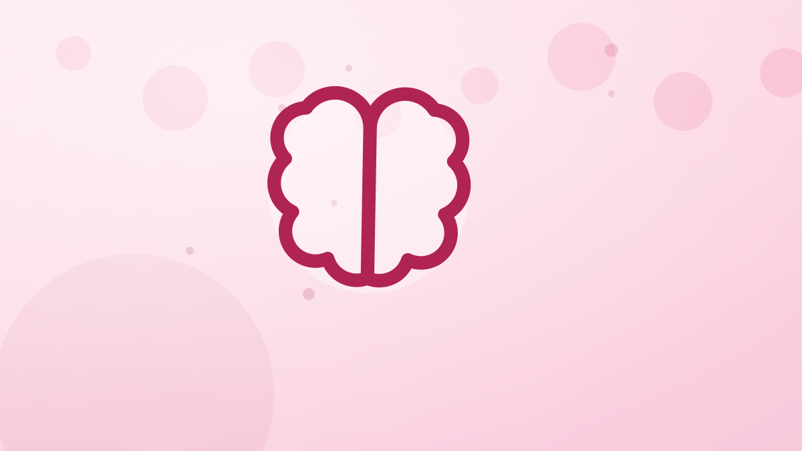

How to Handle Cravings Without Guilt
Cómo manejar los antojos sin sentir culpa
Cravings are normal, not a moral failing. Learn why they happen and how to satisfy them in a way that fits your goals — no guilt required.
Los antojos son normales, no un fallo moral. Por qué aparecen y cómo satisfacerlos de una forma que encaje con tus objetivos, sin culpa.

Everyone gets cravings, and treating them as moral failures only makes them stronger. The guilt-restriction-binge cycle traps a lot of people. A calmer, smarter relationship with cravings starts with understanding where they come from.
Why cravings happen
- Restriction: the more forbidden a food, the more you want it. Telling yourself “never” tends to backfire.
- Habit and cues: the movie, the afternoon coffee, the specific chair — contexts trigger cravings.
- Emotions: stress, boredom and tiredness often masquerade as cravings.
- Genuine hunger: sometimes a craving is just under-eating catching up with you.
Include, don’t forbid
Total bans intensify cravings. Building small amounts of the foods you love into your plan — a planned treat, a portion that fits your calories — removes their forbidden-fruit power. Foods you can have anytime lose their grip.
The pause
When a craving hits, wait ten minutes and drink some water. Many cravings fade on their own; the ones that remain are worth honoring deliberately rather than eating on autopilot.
Satisfy it properly
If you truly want chocolate, a small portion of good chocolate satisfies far better than a mountain of a “diet” substitute that never scratches the itch. Have the real thing, mindfully, in a sensible amount.
Drop the guilt
Eating a craved food is not a failure, and guilt just fuels the next binge. Log it, move on, and keep your focus on the weekly pattern. With Fotocal, a planned treat is just a number that fits your day — no drama.
Key takeaways
- Cravings are normal and often driven by restriction.
- Including favorite foods in moderation reduces their power.
- Pause and hydrate; many cravings pass.
- Satisfy real cravings with a sensible portion — without guilt.
Todo el mundo tiene antojos, y tratarlos como fallos morales solo los hace más fuertes. El ciclo culpa-restricción-atracón atrapa a mucha gente. Una relación más tranquila e inteligente con los antojos empieza por entender de dónde vienen.
Por qué aparecen los antojos
- Restricción: cuanto más prohibido está un alimento, más lo quieres. Decirte «nunca» suele volverse en tu contra.
- Hábito y señales: la película, el café de la tarde, esa silla concreta: los contextos disparan antojos.
- Emociones: el estrés, el aburrimiento y el cansancio se disfrazan a menudo de antojo.
- Hambre real: a veces un antojo es simplemente que estás comiendo poco y te está pasando factura.
Incluye, no prohíbas
Las prohibiciones totales intensifican los antojos. Meter pequeñas cantidades de lo que te gusta dentro de tu plan —un capricho planificado, una ración que encaje en tus calorías— les quita el poder de fruta prohibida. Los alimentos que puedes tomar cuando quieras pierden su fuerza.
La pausa
Cuando llegue un antojo, espera diez minutos y bebe algo de agua. Muchos se desvanecen solos; los que quedan merecen que los atiendas a conciencia en vez de comer en piloto automático.
Satisfácelo bien
Si de verdad te apetece chocolate, una ración pequeña de buen chocolate satisface mucho más que una montaña de un sustituto «light» que nunca acaba de calmar las ganas. Toma lo auténtico, con atención y en una cantidad sensata.
Suelta la culpa
Comer algo que te apetecía no es un fracaso, y la culpa solo alimenta el siguiente atracón. Regístralo, sigue adelante y mantén el foco en el patrón semanal. Con Fotocal, un capricho planificado es solo un número que encaja en tu día, sin dramas.
Ideas clave
- Los antojos son normales y muchas veces los provoca la restricción.
- Incluir con moderación tus alimentos favoritos les resta poder.
- Haz una pausa y bebe agua: muchos antojos pasan.
- Satisface los antojos reales con una ración sensata y sin culpa.